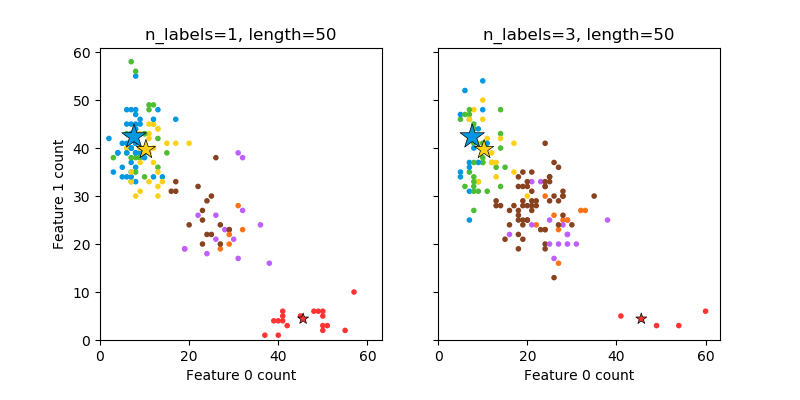

Note
Click here to download the full example code
绘制随机生成的多标签数据集(multilabel dataset)¶
这个例子展示了 datasets.make_multilabel_classification 数据集生成器。 每个样本包含两个特征(总共有50个)，在两类中的每一个上都是不同的分布。
数据点被如下打上标签, 其中 Y 意味着某个类标签出现在了该样本上:
1 2 3 Color Y N N Red N Y N Blue N N Y Yellow Y Y N Purple Y N Y Orange Y Y N Green Y Y Y Brown
星号标记每个类的期望样本；它的大小反映选择该类标签的概率。
左边和右边的示例 显示 n_labels 参数：右图中更多的样本有2或3个标签。
请注意，这个二维示例非常退化：一般来说，特征的数量将比“文档长度”大得多，尽管在这里的文档要比词汇量大得多。 类似地，对于n_class > n_properties 的情况，只用一个特征就想区分特定的两个类是几乎不可能的。
Out:
The data was generated from (random_state=42):
Class P(C) P(w0|C) P(w1|C)
red 0.18 0.91 0.09
blue 0.46 0.15 0.85
yellow 0.36 0.21 0.79
from __future__ import print_function
import numpy as np
import matplotlib.pyplot as plt
from sklearn.datasets import make_multilabel_classification as make_ml_clf
print(__doc__)
COLORS = np.array(['!',
'#FF3333', # red
'#0198E1', # blue
'#BF5FFF', # purple
'#FCD116', # yellow
'#FF7216', # orange
'#4DBD33', # green
'#87421F' # brown
])
# 对多次调用，使用相同的随机数种子 使得函数 make_multilabel_classification 产生的样本
# 能够确保具有相同的分布
RANDOM_SEED = np.random.randint(2 ** 10)
def plot_2d(ax, n_labels=1, n_classes=3, length=50):
X, Y, p_c, p_w_c = make_ml_clf(n_samples=150, n_features=2,
n_classes=n_classes, n_labels=n_labels,
length=length, allow_unlabeled=False,
return_distributions=True,
random_state=RANDOM_SEED)
ax.scatter(X[:, 0], X[:, 1], color=COLORS.take((Y * [1, 2, 4]
).sum(axis=1)),
marker='.')
ax.scatter(p_w_c[0] * length, p_w_c[1] * length,
marker='*', linewidth=.5, edgecolor='black',
s=20 + 1500 * p_c ** 2,
color=COLORS.take([1, 2, 4]))
ax.set_xlabel('Feature 0 count')
return p_c, p_w_c
_, (ax1, ax2) = plt.subplots(1, 2, sharex='row', sharey='row', figsize=(8, 4))
plt.subplots_adjust(bottom=.15)
p_c, p_w_c = plot_2d(ax1, n_labels=1)
ax1.set_title('n_labels=1, length=50')
ax1.set_ylabel('Feature 1 count')
plot_2d(ax2, n_labels=3)
ax2.set_title('n_labels=3, length=50')
ax2.set_xlim(left=0, auto=True)
ax2.set_ylim(bottom=0, auto=True)
plt.show()
print('The data was generated from (random_state=%d):' % RANDOM_SEED)
print('Class', 'P(C)', 'P(w0|C)', 'P(w1|C)', sep='\t')
for k, p, p_w in zip(['red', 'blue', 'yellow'], p_c, p_w_c.T):
print('%s\t%0.2f\t%0.2f\t%0.2f' % (k, p, p_w[0], p_w[1]))
Total running time of the script: ( 0 minutes 0.081 seconds)